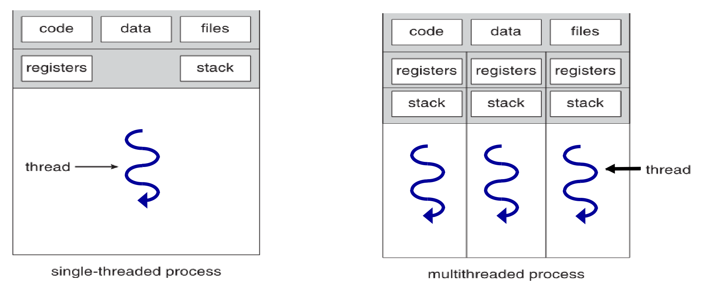
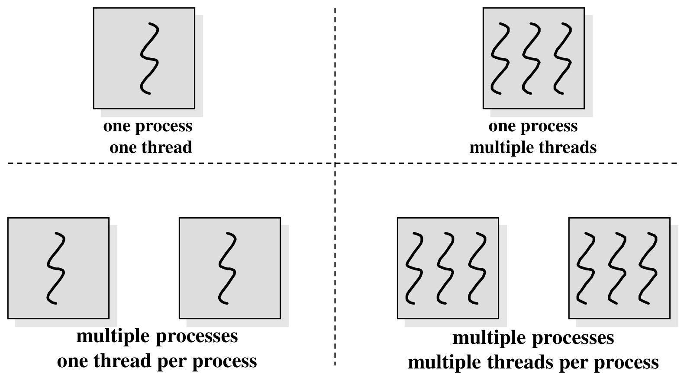
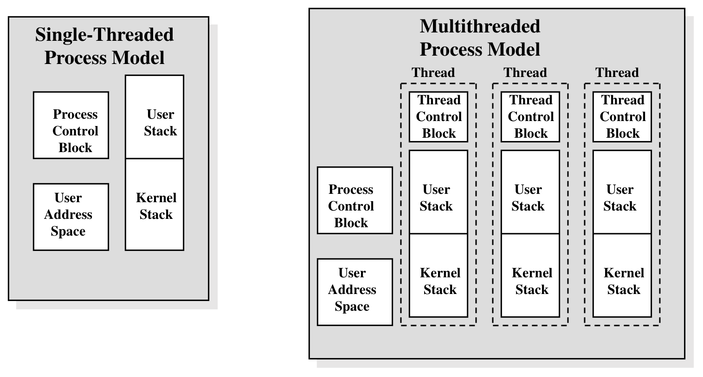

Threads — מושג, זיכרון משותף ו-Pthreads
⏱ זמן משוער: 60 דק'
0. אינטואיציה — תוכנית אחת, כמה "קווי ביצוע"
כל התוכניות שכתבנו עד עכשיו בקורס — simple_cp, simple_bash — היו תוכניות עם קו ביצוע אחד: המעבד מריץ שורה, ואז את זו שאחריה, ואז נכנס לפונקציה, חוזר ממנה, וכן הלאה. בשיעור הזה נשבור את ההנחה הזאת: נלמד איך תוכנית אחת יכולה להריץ כמה קווי ביצוע בו-זמנית, בתוך תהליך אחד ועל אותו זיכרון. כל קו ביצוע כזה נקרא Thread (חוט, או "תהליכון").
הסיפור של המרצה: main, f1, f2, f3
המצגת The thread concept מציגה בדיוק את אותה תוכנית פעמיים — פעם רגילה, ופעם עם חוטים. שווה להסתכל על שני קטעי הקוד זה מול זה:
main() {
...
f1();
...
f2();
...
f3();
...
}
f1() { ... }
f2() { ... }
f3() { ... }main(){
create_thread(f1 ....) ;
/* create a new thread (in addition to the main thread),
and associate it with the code of f1 function) */
create_thread(f2 .....) ;
...
f3();
...
}
f1() { ... }
f2() { ... }
f3() { ... }מה קורה בתוכנית הרגילה (שקף 3)
אחרי שהתהליך P נוצר ומערכת ההפעלה מקצה לו את המעבד, main מתחילה לרוץ. כשהיא קוראת ל-f1(), השליטה (ה-PC) עוברת מ-main אל f1. כש-f1 מסתיימת, השליטה חוזרת ל-main. אחר כך אותו דבר עם f2, ואחר כך עם f3. המשפט שהמרצה מסכם בו את השקף:
מה קורה בתוכנית עם החוטים (שקף 4)
בגרסה הזאת main לא קוראת ל-f1 אלא יוצרת חוט חדש ומשייכת אותו לקוד של f1. ההבדל דרמטי: main לא מחכה ל-f1 — היא ממשיכה הלאה מיד, בזמן שהחוט החדש רץ בעצמו. ואז:
- אחרי הקריאה הראשונה ל-create_thread: גם חוט ה-main וגם חוט ה-f1 יכולים לרוץ בו-זמנית !!
- אחרי הקריאה השנייה נוצר חוט נוסף, המשויך לקוד של f2.
- כעת יש 3 חוטים: חוט ה-main, החוט של f1 והחוט של f2 — ושלושתם יכולים לרוץ בו-זמנית.
ועוד פרט קטן וחשוב מהשקף: f3() איננה חוט. היא נקראת בקוד כקריאת פונקציה רגילה — ולכן היא רצה בתוך חוט ה-main, בדיוק כמו בתוכנית השמאלית. יצירת חוט היא החלטה מפורשת של המתכנת, פונקציה-פונקציה.
מקור: threads (1).pdf, עמ' 3–4 · השלמות מהמחברת: שיעור 20.8.2026, עמ' 1
1. Process מול Thread — מה משותף ומה פרטי
זו הטבלה שהמצגת חוזרת עליה בשלושה תרשימים שונים, וזה גם הלב של השיעור. ארבע האמירות של המרצה, מילה במילה:
השורה האחרונה היא התשובה לשאלה "למה בכלל צריך אוגרים ומחסנית פרטיים לכל חוט?" — כי בכל רגע הקרנל עלול לעצור חוט ולהריץ אחר. כדי שאפשר יהיה להחזיר אותו בדיוק למקום שבו הופסק, צריך לשמור את ה-PC שלו, את האוגרים שלו ואת המחסנית שלו. זה בדיוק ה"הקשר" (Context) של חוט.

קראו את התרשים כך: השורה העליונה — code | data | files — פרושה על כל רוחב המלבן גם בתהליך הרב-חוטי, כי היא משותפת. השורות שמתחתיה — registers ו-stack — מופיעות שלוש פעמים, אחת לכל חוט. הסימן המתולתל הכחול בתחתית כל עמודה הוא החוט עצמו: "נתיב הריצה" שזורם דרך הקוד.
אותו תרשים, בהגדלה: מה יושב איפה במרחב הכתובות

נעבור על התרשים קופסה-קופסה — כל אחת מהן היא מושג בפני עצמו:
- User Address Space — המלבן הגדול כולו: כל הזיכרון שהתהליך רואה. אחד לכל התהליך, לא משנה כמה חוטים יש בו.
- Thread 2 stack (למעלה) — המחסנית הפרטית של החוט השני; בתוכה ה-Stack Frame של routine2() עם המשתנים המקומיים var1, var2, var3.
- Thread 1 stack — אותו דבר עבור החוט הראשון: routine1() עם var1, var2. שימו לב ששתי המחסניות נמצאות באותו מרחב כתובות — הן פרטיות מבחינה לוגית, לא מבחינת הגנה.
- text — מקטע הקוד: main(), routine1(), routine2(), … כל החוטים מריצים קוד מתוך אותו מקטע.
- data — המשתנים הגלובליים (arrayA, arrayB). משותפים. זה המקום שבו נולדות ההתנגשויות.
- heap — הזיכרון הדינמי (malloc). גם הוא משותף: מצביע ש-malloc החזיר לחוט אחד תקף בדיוק באותה מידה בחוט אחר.
- שתי הקופסאות הכחולות העליונות — Stack Pointer / Prgrm. Counter / Registers, אחת לכל חוט. זה ה"מצב הרגעי" של החוט: איפה המחסנית שלו, איזו הוראה הוא מריץ, ומה יש לו באוגרים.
- Process ID / User ID / Group ID — מזהי התהליך והמשתמש. אחד לכל התהליך: לכל החוטים אותו PID ואותו UID.
- Files / Locks / Sockets — המשאבים הפתוחים. משותפים: File Descriptor שחוט אחד פתח, כל חוט אחר יכול לקרוא ולכתוב דרכו.
והקווים האדומים בתרשים מספרים את הסיפור: מכל מחסנית יוצא קו אל קופסת ה-Stack Pointer/PC/Registers של אותו חוט, ומכל קופסת אוגרים יורד קו באלכסון אל מקטע ה-text — אחד אל routine1() והשני אל routine2(). במילים אחרות: ה-PC של כל חוט מצביע לקוד שאותו החוט מריץ, וה-Stack Pointer שלו מצביע למחסנית הפרטית שלו — שני חוטים, אותו קוד, מצבים שונים.
ארבעת השילובים האפשריים

כל מלבן אפור הוא תהליך, וכל סימן מתולתל בתוכו הוא חוט. ארבעת הרבעים: תהליך אחד / חוט אחד (כל תוכנית C שכתבנו עד היום); תהליך אחד / חוטים מרובים (הנושא של השיעור הזה); תהליכים מרובים / חוט אחד בכל אחד (למשל bash שיוצר תהליך-בן לכל פקודה — מודול 07); ותהליכים מרובים / חוטים מרובים בכל אחד. שימו לב: אלה שני צירים בלתי-תלויים, לא "או-או".
שאלה מהבחינה לדוגמה — והתשובה של המרצה
זו שאלה מס' 2 בחלק א' של הבחינה לדוגמה (10 נק'), והיא בדיוק על החומר של הסעיף הזה. נסו לענות בעצמכם לפני שאתם פותחים:
תשובת המרצה (מילה במילה מדף הפתרון):
"תהליך (Process) מחזיק במרחב כתובות וירטואלי פרטי ומבודד.
לעומתו Thread חולק את מרחב הכתובות של התהליך עם
Threads אחרים באותו תהליך."
מה בודקים כאן: שתי מילות המפתח הן פרטי ומבודד (לתהליך) מול חולק (לחוט). שתי שורות מספיקות — המרצה עצמו ענה בשתי שורות. מה שכן: אם נשאר לכם מקום, שווה להוסיף את המשלים — אבל לכל חוט יש מחסנית ואוגרים משלו — כי זו החצי השני של אותה הבחנה.
מקור: threads (1).pdf, עמ' 2, 5, 6 · example-ans.pdf, שאלה 2
2. המודל בקרנל — PCB, TCB, ו-task_struct אחד לכל חוט
עד כאן ראינו חוטים מנקודת המבט של המתכנת. עכשיו נרד שכבה: מה מערכת ההפעלה מחזיקה כדי לנהל חוט?

| מבנה | במודל החד-חוטי | במודל הרב-חוטי |
|---|---|---|
| Process Control Block (PCB) | אחד | אחד לכל התהליך — לא נכפל |
| User Address Space | אחד | אחד לכל התהליך — זה בדיוק ה"שיתוף" |
| Thread Control Block (TCB) | לא קיים בנפרד | אחד לכל חוט |
| User Stack | אחד | אחד לכל חוט |
| Kernel Stack | אחד | אחד לכל חוט — נקודה שקל לפספס! |
למה גם Kernel Stack פר-חוט? כי כל חוט יכול לבצע קריאת מערכת בעצמו, ובזמן הקריאה הוא רץ ב-Kernel Mode וצריך מחסנית משלו שם — אחרת שני חוטים שנמצאים בו-זמנית בתוך הקרנל היו דורסים זה את המחסנית של זה.
ולינוקס? "תהליכים קלי משקל"
דף העזר Linux Threads אומר את זה במפורש: לינוקס רואה חוטים כ"תהליכים קלי משקל" (Lightweight Processes) — הם חולקים את אותו מרחב זיכרון אך פועלים כיישויות ביצוע נפרדות.
ובפועל: בלינוקס אין מבנה נתונים נפרד לחוט. כמו שראינו במודול 07, הקרנל מנהל task_struct אחד לכל "יחידת ביצוע" — ולכל חוט יש task_struct משלו. מה שמאחד אותם לתהליך אחד הוא שדה אחד:
- pid — מזהה ייחודי של אותה יחידת ביצוע מול הקרנל. לכל חוט יש pid משלו; זה מה שקוראים לו TID (Thread ID).
- tgid (Thread Group ID) — המזהה המשותף לכל החוטים של אותה תוכנית. ה-tgid של החוט הראשי שווה ל-PID שלו — ולכן זה בדיוק המספר שאתם רואים כ"מספר התהליך" ב-ps.
במילים אחרות: ה-PID שאנחנו מכירים הוא למעשה ה-tgid, וה-TID הוא ה-pid הפנימי של כל חוט. שני חוטים באותו תהליך ⇐ אותו tgid, TID שונה. את זה נראה בעוד רגע בפלט של התוכנית הראשונה.
pthread_t — המזהה שקיים רק אצלנו
וכאן מגיע פרט שהמרצה סימן כ"קריטי למתכנתי מערכות". בקוד שלנו מזהים חוט באמצעות משתנה מטיפוס pthread_t. מה זה באמת?
- בלינוקס מדובר בדרך כלל ב-
unsigned long. - זהו אינו מספר אקראי: ברוב המימושים (glibc) הערך הוא למעשה כתובת בזיכרון המצביעה על מבנה הנתונים Thread Control Block — בתוך מרחב הכתובות של המשתמש.
- מתייחסים אליו כאל Opaque Type (טיפוס אטום): לא ניגשים לשדות שלו ישירות, אלא רק דרך פונקציות הספרייה. הוא מחזיק מידע על ה-Stack של החוט, על מצב הריצה שלו ועל ערכי החזרה.
- הקרנל לא משתמש ב-pthread_t בכלל. הוא מנהל חוטים לפי TID. ה-pthread_t קיים רק ב-User Space, כדי שספריית ה-pthreads תוכל לנהל את החוטים מבלי להעיק על הקרנל בכל פעולה קטנה.
מקור: threads (1).pdf, עמ' 7 · threads.pdf, עמ' 2–3 · task_struct.pdf · example-ans.pdf, שאלה 9 · השלמות מהמחברת: שיעורים 26.7, 20.8, 27.8.2026
3. Pthreads — ה-API שאיתו עובדים
Pthreads
(POSIX Threads) הוא התקן שמגדיר איך תוכנית C יוצרת ומנהלת חוטים.
בלינוקס המימוש שלו יושב ב-glibc (בחלק שנקרא
NPTL), וכדי להשתמש בו מוסיפים
#include <pthread.h>. ארבע הפונקציות שנצטרך:
| פונקציה | מה היא עושה |
|---|---|
pthread_create | יוצרת חוט חדש ומשייכת אותו לפונקציה. החוט מתחיל לרוץ מיד. |
pthread_self | מחזירה את המזהה (pthread_t) של החוט הקורא — "מי אני". |
pthread_join | חוסמת את החוט הקורא עד שחוט אחר מסיים. "חכה לו". |
pthread_exit | מסיימת את החוט הנוכחי בלבד — שאר החוטים ממשיכים. |
pthread_create() — ארבעת הארגומנטים
החתימה המלאה (כפי שהיא מופיעה ב-man page):
int pthread_create(pthread_t *thread,
const pthread_attr_t *attr,
void *(*start_routine)(void *),
void *arg);וכך זה נראה בקוד של המרצה:
pthread_t my_thread;
if (pthread_create(&my_thread, NULL, foo, NULL)) {
return 1;
}| # | בקוד | מה זה |
|---|---|---|
| 1 | &my_thread |
פרמטר פלט. מצביע למשתנה שבו הספרייה תכתוב את המזהה של החוט החדש. לכן מעבירים כתובת (&) ולא ערך — אחרת לא הייתה דרך להחזיר לנו את המזהה. |
| 2 | NULL (attr) |
מאפייני החוט — למשל גודל המחסנית. NULL = ברירת מחדל, שהיא לרוב 8MB מחסנית. |
| 3 | foo (start_routine) |
מצביע לפונקציה — ה-"main" של החוט החדש. שם
הוא מתחיל את חייו. החתימה חייבת להיות
void *f(void *). |
| 4 | NULL (arg) |
הנתון שיועבר אל הפונקציה כארגומנט. הטיפוס הוא
void* ⇐ אפשר להעביר מצביע לכל דבר.
NULL = לא מעבירים כלום. |
⊛ מוסכמת ערך ההחזרה — ההבדל מקריאות מערכת
לכן בקוד של המרצה הבדיקה נראית אחרת ממה שהתרגלנו: if
(pthread_create(...)) — כלומר "אם התוצאה שונה מאפס, קרתה שגיאה". בתוכנית
ה-Reader/Writer (סעיף 5) זה נכתב מפורשות:
!= 0. וגם: אין טעם לקרוא ל-perror אחרי פונקציית pthread שנכשלה —
errno לא עודכן. (המרצה עצמו כן משתמש ב-perror
שם, כדפוס אחיד לטיפול בשגיאות.)
⊛ pthread_create היא לא קריאת מערכת
זו נקודה שהמרצה הדגיש במרקר ירוק בדף העזר: pthread_create היא פונקציית מעטפת (Wrapper) לקריאת המערכת המורכבת clone().
כלומר: הקוד שלנו קורא לפונקציה ב-glibc, שרצה ב-user mode; היא מכינה את ה-TCB (struct pthread) ואת המחסנית של החוט החדש — ורק בסופה היא מבצעת את קריאת המערכת clone(), שיוצרת בקרנל task_struct חדש לחוט. למה בכלל צריך אותו? בלשון המרצה: "כי צריך לנהל אותו!" — חוט הוא יחידת ביצוע שהמתזמן מריץ, ולכן גם הוא עובר בין ready ל-running כמו תהליך (מודול 08). ה-task_struct החדש מקבל pid משלו (ה-TID) — אבל אותו tgid כמו של החוט הראשי, ולכן ה-PID שווה.
שלוש הפונקציות האחרות
pthread_t pthread_self(void);
int pthread_join(pthread_t thread, void **retval);
void pthread_exit(void *retval);- pthread_self() — מחזירה את ה-pthread_t של החוט שקרא לה. אין לה ארגומנטים ואין לה כישלון. שימושית בעיקר להדפסות ולזיהוי עצמי.
- pthread_join(tid, NULL) — חוסמת את החוט הקורא עד שהחוט שמזהו הועבר מסיים. הארגומנט השני הוא מקום לאסוף את ערך ההחזרה של אותו חוט; NULL = "לא מעניין אותי". זו ההקבלה של waitpid() מעולם התהליכים.
- pthread_exit(NULL) — מסיימת את החוט הנוכחי בלבד. שימו לב להבדל מ-exit(), שמסיימת את כל התהליך על כל חוטיו. גם return רגיל מפונקציית החוט מסיים אותו: בקוד של המרצה כתוב במפורש "Returning from this function terminates the thread".
התוכנית הראשונה — PID זהה, TID שונה
זו התוכנית שבה המרצה פותח את דף העזר Linux Threads. המטרה שלה פדגוגית לחלוטין: להראות בעיניים ששני חוטים באותו תהליך מדפיסים אותו PID אבל TID שונה. חלק א' — שורות ה-#include, המשתנה הגלובלי ושתי הפונקציות:
#include <pthread.h> // POSIX threads library
#include <stdio.h>
#include <unistd.h> // For sleep() and getpid() functions
/* Global variable to store the thread ID.
Shared across all threads in this process. */
pthread_t my_thread;
/* Helper function to display the IDs of the calling thread */
void print_my_ids(void)
{
pid_t pid; // Process ID (Common to all threads in the process)
pthread_t tid; // Thread ID (Unique identifier within the pthread library)
pid = getpid(); // System call to get the Process ID from the Kernel
tid = pthread_self(); // Library function to get the current thread's ID
printf("My PID = %u, My TID = %u\n", (unsigned int)pid, (unsigned int)tid);
}
/* Entry point function for the newly created thread */
void* foo(void* arg)
{
/* Print the ID stored in the global variable upon creation */
printf("Thread:%u\n", (unsigned int)my_thread);
/* Call helper to show this is a separate thread in the same process */
print_my_ids();
return NULL; // Returning from this function terminates the thread
}
שימו לב ל-foo: היא ה"פונקציה הראשית" של החוט החדש, ולכן חתימתה היא
בדיוק void* foo(void* arg). וחלק ב' —
main:
int main(int argc, const char* argv[])
{
/* pthread_create: Spawns a new thread executing the 'foo' function.
Returns 0 on success, or an error code otherwise. */
if (pthread_create(&my_thread, NULL, foo, NULL)) {
return 1;
}
/* Execution inside the Main Thread */
printf("Main Thread:");
print_my_ids();
/* * Pause for 2 seconds. This is crucial to prevent the Main Thread
* from finishing main(). If main() exits, the Kernel terminates
* the entire process and all its threads.
*/
sleep(2);
return 0;
}מה יודפס — ואיך לקרוא את הפלט
התוכנית מדפיסה שלוש שורות. המספרים משתנים בכל הרצה — כאן הם רק מקומות-שמורים להמחשה:
$ ./thread_example
Main Thread:My PID = 4711, My TID = 1180476672
Thread:1172083968
My PID = 4711, My TID = 1172083968וזה כל הלקח של התוכנית, בשלוש נקודות:
- ה-PID זהה בשתי השורות (4711 בדוגמה) — כי שני החוטים הם אותו תהליך, וחולקים את אותם משאבי מערכת. getpid() היא קריאת מערכת שמחזירה את המזהה מהקרנל.
- ה-TID שונה — לכל חוט מזהה משלו.
- Thread:1172083968 ו-My TID = 1172083968 מציגים אותו מספר: הראשון הוא הערך שהספרייה כתבה למשתנה הגלובלי my_thread, והשני הוא מה ש-pthread_self() החזירה בתוך החוט — שני נתיבים לאותו מזהה.
⊛ ולמה sleep(2) הכרחית
זו הנקודה שמחברת את השיעור הזה למודול 08: יציאה מ-main שקולה ל-exit(), והקרנל מפרק את התהליך כולו — לא רק את החוט שקרא. אם היינו מוחקים את sleep(2), במקרים רבים לא היינו רואים בכלל את שורות ה-Thread.
הפתרון הנכון, אגב, אינו sleep אלא
pthread_join(my_thread, NULL) — להמתין לחוט
בפועל במקום לנחש כמה זמן ייקח לו. כך עושה התוכנית הגדולה בסעיף 5.
מקור: threads.pdf, עמ' 1–3 · השלמות מהמחברת: שיעור 20.8.2026, עמ' 4–7
4. מפת הזיכרון — איפה יושב כל משתנה, ומי רואה אותו
עכשיו נחבר את התיאוריה לקוד אמיתי. כשתוכנית C נטענת לזיכרון, מרחב הכתובות שלה מחולק למקטעים (segments), ולכל סוג משתנה יש מקטע קבוע. בשביל חוטים זו לא טריוויה — המקטע קובע אם המשתנה משותף או פרטי:
| מקטע | מה נמצא בו | משותף לכל החוטים? |
|---|---|---|
| text (code) | הוראות המכונה של התוכנית — כל הפונקציות | ✔ משותף |
| .data | משתנים גלובליים מאותחלים — למשל
int g_initialized_status = 1; |
✔ משותף |
| .bss | משתנים גלובליים לא מאותחלים — למשל
pthread_mutex_t g_sync_mutex;. מאותחל
אוטומטית לאפס / false |
✔ משותף |
| Heap | הקצאות דינמיות — כל malloc |
✔ משותף (הזיכרון עצמו נגיש לכולם) |
| Stack | המשתנים המקומיים של כל פונקציה — ה-Stack Frame | ✘ מחסנית נפרדת לכל חוט |
המרצה כתב את תוכנית ה-Reader/Writer (סעיף 5) כך שההערות בקוד ממפות
כל משתנה למקטע שלו: /* .data segment */,
/* .bss segment */,
/* Stack Frame */,
/* Heap */. זו לא קישוטיות — זו בדיוק מפת ה"משותף מול
נפרד" של השיעור. הנה היא, משתנה-משתנה:
| משתנים | מקטע (לפי הערות הקוד) | משותף בין החוטים? |
|---|---|---|
g_initialized_status, g_file_path, g_total_bytes_processed |
.data — גלובלים מאותחלים |
כן — עותק אחד לכל התהליך |
g_sync_mutex, g_data_cond, g_shared_transfer_char |
.bss — גלובלים לא מאותחלים |
כן — זה כל הרעיון: התא המשותף גר כאן |
g_has_data, g_stream_finished |
.bss — ההערה מציינת: מאותחל ל-false כברירת מחדל |
כן — דגלי הסנכרון ששני הצדדים קוראים |
local_fd, local_bytes_read, read_buf (המצביע) |
Stack Frame של ה-Reader | לא — לכל חוט מחסנית משלו |
local_processed_count, local_bytes_written, write_buf (המצביע) |
Stack Frame של ה-Writer | לא — נגישים רק לקוד של ה-Writer |
main_fd, reader_tid, writer_tid, payload, payload_len |
Stack Frame של main |
לא — החוט הראשי הוא קו ביצוע בפני עצמו |
ההקצאות של malloc(sizeof(char)) (הזיכרון שאליו מצביעים read_buf/write_buf) |
Heap | ה-Heap שייך למרחב המשותף — אבל כל באפר הוקצה על-ידי חוט אחד ורק הוא נוגע בו |
השורה התחתונה למבחן: הגלובלים משותפים אוטומטית — אותו
.data ואותו .bss
לכל החוטים של התהליך — ואילו לכל חוט יש Stack משלו,
ולכן המשתנים המקומיים פרטיים. שימו לב גם לקונבנציית השמות של המרצה: כל משתנה גלובלי מתחיל
ב-g_, וכל מקומי ב-local_
— אפשר לקרוא את המפה ישר מהשמות.
מקור: code.pdf, עמ' 1 (הערות הסגמנטים) · threads (1).pdf, עמ' 5 · השלמות מהמחברת: שיעורים 20.8, 27.8.2026
5. הדוגמה המלאה — Reader/Writer בתוכנית אחת
עד כאן ראינו חוט אחד שמדפיס שורה. עכשיו התוכנית המלאה שהמרצה חילק (code.pdf) — ארבעה עמודי קוד רצופים שמחברים הכול: קריאות מערכת מהמודולים הקודמים, יצירת חוטים, וזיכרון משותף עם סנכרון.
מה היא עושה? main יוצר קובץ בשם
shared_file בעזרת שלישיית קריאות המערכת המוכרות —
open, write,
close — וכותב לתוכו 52 אותיות
(a–z ואז A–Z). ואז הוא יוצר שני
חוטים בתוך אותו תהליך: Reader שקורא את
הקובץ בייט אחר בייט, ו-Writer שמדפיס כל
בייט למסך. הבייטים עוברים ביניהם דרך תא זיכרון גלובלי אחד — משתנה
char יחיד בשם
g_shared_transfer_char.
Thread
Thread
שימו לב שבתוכנית הזאת יש שלושה חוטים, לא שניים: main, Reader ו-Writer. חוט ה-main אמנם לא עושה הרבה אחרי היצירה — הוא רק ממתין ב-pthread_join — אבל הוא קו ביצוע מלא לכל דבר, עם המחסנית שלו.
הקוד המלא — מילה במילה
לפני הפירוק המודרך — הנה התוכנית כולה. הצעת קריאה ראשונה: התחילו מהגלובלים למעלה (שימו לב
להערות הסגמנטים מסעיף 4), קפצו ל-main בתחתית כדי לראות
את סדר האירועים, ורק אז קראו את שתי פונקציות החוטים. וכמו תמיד אצל המרצה — כל
קריאת מערכת וכל קריאת
pthread נבדקת מיד אחרי שהיא חוזרת.
#define _GNU_SOURCE
#include <stdio.h>
#include <stdlib.h>
#include <fcntl.h>
#include <unistd.h>
#include <pthread.h>
#include <string.h>
#include <stdbool.h>
/* Global Initialized Variables (.data segment) */
int g_initialized_status = 1;
const char *g_file_path = "shared_file";
size_t g_total_bytes_processed = 0;
/* Global Uninitialized Variables (.bss segment) */
pthread_mutex_t g_sync_mutex;
pthread_cond_t g_data_cond;
char g_shared_transfer_char;
/* Synchronization Control Flags (.bss segment - initialized to false by default) */
bool g_has_data = false;
bool g_stream_finished = false;
/* Reader Thread Routine */
void *reader_thread_func(void *arg) {
/* Reader Thread Local Variables (Stack Frame) */
int local_fd = -1;
ssize_t local_bytes_read = 0;
char *read_buf = NULL;
/* Allocate 1-byte dynamic buffer on the Heap */
read_buf = (char *)malloc(sizeof(char));
if (read_buf == NULL) {
perror("Reader: Failed to allocate read_buf");
pthread_exit(NULL);
}
/* Open shared_file for reading using Linux System Call open() */
local_fd = open(g_file_path, O_RDONLY);
if (local_fd == -1) {
perror("Reader: Failed to open file");
free(read_buf);
pthread_exit(NULL);
}
/* Processing Loop: Read byte-by-byte via system call read() */
while ((local_bytes_read = read(local_fd, read_buf, 1)) > 0) {
pthread_mutex_lock(&g_sync_mutex);
/* Wait until the Writer thread consumes the previous byte */
while (g_has_data) {
pthread_cond_wait(&g_data_cond, &g_sync_mutex);
}
/* Transfer byte to shared global transfer storage */
g_shared_transfer_char = *read_buf;
g_has_data = true;
/* Signal the Writer thread that a new byte is available */
pthread_cond_signal(&g_data_cond);
pthread_mutex_unlock(&g_sync_mutex);
}
if (local_bytes_read == -1) {
perror("Reader: Error occurred during read()");
}
/* Signal stream completion to Writer thread */
pthread_mutex_lock(&g_sync_mutex);
while (g_has_data) {
pthread_cond_wait(&g_data_cond, &g_sync_mutex);
}
g_stream_finished = true;
pthread_cond_signal(&g_data_cond);
pthread_mutex_unlock(&g_sync_mutex);
/* Cleanup resources */
close(local_fd);
free(read_buf);
pthread_exit(NULL);
}
/* Writer Thread Routine */
void *writer_thread_func(void *arg) {
/* Writer Thread Local Variables (Stack Frame) */
int local_processed_count = 0;
ssize_t local_bytes_written = 0;
char *write_buf = NULL;
/* Allocate 1-byte dynamic buffer on the Heap */
write_buf = (char *)malloc(sizeof(char));
if (write_buf == NULL) {
perror("Writer: Failed to allocate write_buf");
pthread_exit(NULL);
}
while (1) {
pthread_mutex_lock(&g_sync_mutex);
/* Wait until Reader supplies new data or signals EOF */
while (!g_has_data && !g_stream_finished) {
pthread_cond_wait(&g_data_cond, &g_sync_mutex);
}
/* Check for termination condition */
if (!g_has_data && g_stream_finished) {
pthread_mutex_unlock(&g_sync_mutex);
break;
}
/* Retrieve byte into dynamic write buffer */
*write_buf = g_shared_transfer_char;
g_has_data = false;
local_processed_count++;
/* Echo byte to standard output via system call write() */
local_bytes_written = write(STDOUT_FILENO, write_buf, 1);
if (local_bytes_written == -1) {
perror("Writer: Error writing to stdout");
}
/* Signal Reader thread that buffer is cleared */
pthread_cond_signal(&g_data_cond);
pthread_mutex_unlock(&g_sync_mutex);
}
/* Update global metric */
pthread_mutex_lock(&g_sync_mutex);
g_total_bytes_processed = (size_t)local_processed_count;
pthread_mutex_unlock(&g_sync_mutex);
write(STDOUT_FILENO, "\n", 1);
/* Cleanup resources */
free(write_buf);
pthread_exit(NULL);
}
/* Main Thread Execution Entry Point */
int main(void) {
/* Main Thread Local Variables (Stack Frame) */
int main_fd = -1;
pthread_t reader_tid;
pthread_t writer_tid;
const char *payload = "abcdefghijklmnopqrstuvwxyzABCDEFGHIJKLMNOPQRSTUVWXYZ";
size_t payload_len = strlen(payload);
/* Initialize Synchronization Primitives dynamically */
if (pthread_mutex_init(&g_sync_mutex, NULL) != 0) {
perror("Main: Mutex initialization failed");
return EXIT_FAILURE;
}
if (pthread_cond_init(&g_data_cond, NULL) != 0) {
perror("Main: Condition variable initialization failed");
pthread_mutex_destroy(&g_sync_mutex);
return EXIT_FAILURE;
}
/* Step 1: Create shared_file */
printf("Start creating shared_file\n");
main_fd = open(g_file_path, O_WRONLY | O_CREAT | O_TRUNC, 0644);
if (main_fd == -1) {
perror("Main: Failed to create file");
pthread_mutex_destroy(&g_sync_mutex);
pthread_cond_destroy(&g_data_cond);
return EXIT_FAILURE;
}
if (write(main_fd, payload, payload_len) == -1) {
perror("Main: Failed to write payload");
close(main_fd);
pthread_mutex_destroy(&g_sync_mutex);
pthread_cond_destroy(&g_data_cond);
return EXIT_FAILURE;
}
if (close(main_fd) == -1) {
perror("Main: Failed to close file");
pthread_mutex_destroy(&g_sync_mutex);
pthread_cond_destroy(&g_data_cond);
return EXIT_FAILURE;
}
printf("Finished creating shared_file\n");
/* Step 2: Spawn Reader Thread */
printf("Start creating the reader thread\n");
if (pthread_create(&reader_tid, NULL, reader_thread_func, NULL) != 0) {
perror("Main: Failed to create reader thread");
return EXIT_FAILURE;
}
printf("created the reader thread\n");
/* Step 3: Spawn Writer Thread */
printf("Start creating the writer thread\n");
if (pthread_create(&writer_tid, NULL, writer_thread_func, NULL) != 0) {
perror("Main: Failed to create writer thread");
return EXIT_FAILURE;
}
printf("created the writer thread\n");
/* Step 4: Join Secondary Threads */
pthread_join(reader_tid, NULL);
pthread_join(writer_tid, NULL);
/* Clean up global synchronization primitives */
pthread_mutex_destroy(&g_sync_mutex);
pthread_cond_destroy(&g_data_cond);
return EXIT_SUCCESS;
}מקור: code.pdf (עמ' 1–4, רצוף)
קריאה מודרכת — פונקציה אחר פונקציה
main — הבמאי: מכין, יוצר, ממתין, מנקה
main עושה ארבעה דברים, בסדר קבוע:
- אתחול פרימיטיבות הסנכרון —
pthread_mutex_initואזpthread_cond_init, לפני שקיים בכלל חוט שישתמש בהן. שימו לב לניקוי המדורג בכשלים: אם ה-cond נכשל — משמידים את ה-mutex שכבר אותחל; אם ה-open/write/close שאחריהם נכשלים — משמידים את שניהם. rollback בסדר הפוך לסדר ההקצאה. - יצירת shared_file —
open(g_file_path, O_WRONLY | O_CREAT | O_TRUNC, 0644), בדיוק אותם דגלים והרשאות שראינו ב-cp; כתיבת ה-payload (52 אותיות, אורכן נמדד עםstrlen) וסגירה. הקובץ מוכן לפני שהחוטים נולדים. - יצירת שני החוטים —
pthread_createפעמיים: קודם ה-Reader, אחר-כך ה-Writer (הארגומנטים — סעיף 3). - המתנה וניקוי —
pthread_joinפעמיים (main נחסם עד ששני החוטים מסיימים), ורק אזpthread_mutex_destroy+pthread_cond_destroy. הסדר קדוש: init לפני create, join לפני destroy — אסור להשמיד פרימיטיבה שעוד משתמשים בה.
וכאן, שימו לב, אין sleep — כי יש join. זו הגרסה הנכונה של אותו רעיון מהתוכנית הראשונה: לא לנחש כמה זמן ייקח לחוט, אלא להמתין לו בפועל.
reader_thread_func — הצד המזין
ה-Reader מקצה לעצמו באפר של בייט אחד על ה-Heap,
פותח את הקובץ עם open(g_file_path, O_RDONLY) ומקבל
File Descriptor משלו, ואז נכנס ללולאת
הליבה — קריאה של בייט אחד בכל סיבוב:
while ((local_bytes_read = read(local_fd, read_buf, 1)) > 0) {
pthread_mutex_lock(&g_sync_mutex);
/* Wait until the Writer thread consumes the previous byte */
while (g_has_data) {
pthread_cond_wait(&g_data_cond, &g_sync_mutex);
}
/* Transfer byte to shared global transfer storage */
g_shared_transfer_char = *read_buf;
g_has_data = true;
/* Signal the Writer thread that a new byte is available */
pthread_cond_signal(&g_data_cond);
pthread_mutex_unlock(&g_sync_mutex);
}
על כל בייט: נועלים, ממתינים כל עוד g_has_data דולק
(כלומר — ה-Writer עוד לא צרך את הבייט הקודם), מניחים את הבייט החדש
בתא המשותף, מדליקים את הדגל, מסמנים ל-Writer ומשחררים. כשהלולאה
נגמרת בודקים אם זה בגלל שגיאה
(local_bytes_read == -1 ⇐ perror)
או סוף קובץ (0). ואז מגיע פרוטוקול הסיום: ה-Reader
שוב נועל, ממתין שהבייט האחרון ייצרך (שוב
while (g_has_data)), רק אז מציב
g_stream_finished = true, מסמן, משחרר — ומנקה:
close, free,
pthread_exit(NULL).
writer_thread_func — הצד הצורך
גם ה-Writer מקצה באפר של בייט אחד על ה-Heap,
ואז נכנס ל-while (1) שבתחילת כל סיבוב שלו יושבות שתי
הבדיקות החשובות בתוכנית:
pthread_mutex_lock(&g_sync_mutex);
/* Wait until Reader supplies new data or signals EOF */
while (!g_has_data && !g_stream_finished) {
pthread_cond_wait(&g_data_cond, &g_sync_mutex);
}
/* Check for termination condition */
if (!g_has_data && g_stream_finished) {
pthread_mutex_unlock(&g_sync_mutex);
break;
}
ה-Writer ממתין כל עוד אין בייט חדש וגם הזרם לא
הסתיים. כשהוא מתעורר, הוא מבחין בין שני מקרים: אם אין בייט אבל הזרם הסתיים — משחררים את
המנעול ו-break (תנאי הסיום); אחרת יש בייט לצרוך:
מעתיקים אותו מהתא המשותף אל write_buf, מכבים את
g_has_data, מקדמים מונה מקומי, כותבים את הבייט
למסך עם write(STDOUT_FILENO, write_buf, 1) (עם בדיקת
-1), מסמנים ל-Reader שהתא התפנה ומשחררים.
אחרי הלולאה ה-Writer מעדכן פעם אחת בלבד, תחת
mutex, את המדד הגלובלי
g_total_bytes_processed מתוך המונה המקומי — דוגמה יפה
למזעור הזמן שבו מחזיקים את המנעול — מדפיס ירידת שורה, ומנקה.
הפרוטוקול כפינג-פונג — מי מחכה למה
התא המשותף מכיל בייט אחד, ולכן שני הצדדים חייבים לעבוד בתורות מושלמים — כמו פינג-פונג. כל הטבלה הזו מתרחשת תחת המנעול:
| מי | ממתין כל עוד… | וכשמתפנה — עושה | ואז מסמן |
|---|---|---|---|
| Reader (על כל בייט) | g_has_data דולק — התא עוד מלא |
מניח בייט חדש בתא, מדליק g_has_data |
pthread_cond_signal ⇐ "יש בייט!" |
| Writer (על כל סיבוב) | !g_has_data && !g_stream_finished — אין בייט ואין EOF |
צורך את הבייט, מכבה g_has_data, כותב למסך |
pthread_cond_signal ⇐ "התא פנוי!" |
| Reader (אחרי EOF) | g_has_data דולק — הבייט האחרון עוד לא נצרך |
מדליק g_stream_finished |
pthread_cond_signal ⇐ "נגמר הזרם!" |
| Writer (בסיום) | — | רואה !g_has_data && g_stream_finished ⇐ break |
— (רק משחרר את המנעול) |
שימו לב לאלגנטיות: אותו condition variable אחד
(g_data_cond) משמש את כל שלושת המסרים — "יש בייט",
"התא פנוי" ו"הזרם הסתיים". ומי שמבחין בין המסרים הוא לא ה-cond —
אלא הדגלים שכל צד בודק בלולאת ה-while שלו.
מה כל קריאת סנכרון עושה — בשורה אחת
כאן רק נכיר את השמות ואת התפקיד; התיאוריה המלאה — מה זה בכלל Race Condition, איך Mutex ממומש, מה קורה בקרנל — נמצאת במודול 11.
| קריאה | מה היא עושה בתוכנית הזאת |
|---|---|
pthread_mutex_init / …_destroy |
אתחול דינמי של המנעול ב-main, והשמדתו אחרי ה-join. פרימיטיבה חיה רק בין ה-init ל-destroy שלה. |
pthread_mutex_lock / unlock |
תוחמים "אזור מוגן": בין lock ל-unlock רק חוט אחד יכול להימצא. בקוד כל נגיעה במצב המשותף עטופה בזוג הזה. חוט שקורא lock כשהמנעול תפוס — ממתין. |
pthread_cond_wait(&cond, &mutex) |
"לך לישון עד שיקראו לך": משחררת את המנעול ומרדימה את החוט בפעולה אחת; כשמישהו מסמן, החוט מתעורר כשהמנעול שוב בידיו וחוזר לבדוק את תנאי ה-while. בלי השחרור הזה הצד השני לעולם לא היה מצליח לנעול — והכול היה נתקע. |
pthread_cond_signal(&cond) |
מעיר חוט שממתין על אותו condition variable. בקוד הוא נקרא תמיד באותה נקודה: אחרי שינוי הדגלים, לפני ה-unlock. |
למה בכלל צריך את כל זה? כי שני החוטים קוראים וכותבים את אותם משתנים גלובליים. בלי המנעול, שניהם היו עלולים לגעת בתא ובדגלים בו-זמנית; ובלי ה-cond, הם היו צריכים להסתובב בלולאה ולבדוק את הדגל שוב ושוב במקום לישון עד שיש מה לעשות.
מקור: code.pdf, עמ' 1–4 · השלמות מהמחברת: שיעור 13.8.2026, עמ' 10
6. הצצה קדימה — מה קורה כששני חוטים נוגעים באותו משתנה
דף העזר Linux Threads לא נגמר בתוכנית הראשונה: עמודיו 4–9 ממשיכים
ישר אל הצד המסוכן של השיתוף. הנה התמצית בפסקה אחת. קחו שני חוטים שכל אחד מבצע
counter++ מיליון פעמים על אותו משתנה גלובלי. התוצאה
הצפויה היא 2,000,000 — אבל בפועל מתקבלת תוצאה
נמוכה יותר, ושונה בכל הרצה. הסיבה: הפעולה
counter++ אינה
אטומית. ברמת המעבד היא
שלוש הוראות נפרדות — Read (מהזיכרון
לאוגר), Modify (הוספת 1 באוגר),
Write (מהאוגר חזרה לזיכרון) — והקרנל רשאי להפסיק את
החוט בין ההוראות. אם שני חוטים קוראים את הערך 100, שניהם מעלים ל-101 באוגרים
הנפרדים שלהם, ושניהם כותבים 101 — במקום 102 איבדנו קידום אחד. זה בדיוק
Race Condition, וזה הנושא של
מודול 11 — סנכרון Threads: שם נראה את ההגדרה המדויקת, את דוגמת
חשבון הבנק, ואת הפתרון עם Mutex.
מקור: threads.pdf, עמ' 4–5 · השלמות מהמחברת: שיעור 20.8.2026, עמ' 2
7. מלכודות למבחן
8. בדיקה עצמית
בתוכנית החד-חוטית של השקף (main קוראת ל-f1, ל-f2 ואז ל-f3) — היכן נמצאת השליטה בכל רגע נתון?
לפי המצגת — מה חולקים חוטים של אותו תהליך, ומה פרטי לכל חוט?
מה מחזיק בפועל משתנה מטיפוס pthread_t, ומי משתמש בו?
הקריאה pthread_create(...) החזירה את הערך 11. מה זה אומר?
מדוע sleep(2) בסוף ה-main של התוכנית הראשונה הכרחית?
איזו קריאת מערכת מתבצעת בסופה של pthread_create, ומה היא עושה?
תוכנית יצרה חוט אחד נוסף, ושני החוטים קוראים ל-getpid(). מה יודפס, ומה קיים בקרנל?
לפי שקף מודלי התהליך (Single-Threaded / Multithreaded Process Model) — מה נכפל לכל חוט?
בתוכנית ה-Reader/Writer — מדוע צריך גם את g_has_data וגם את g_stream_finished?
מדוע Context Switch בין שני חוטים של אותו תהליך מהיר יותר מאשר בין שני תהליכים?
סיימתם את הפרק? סמנו אותו כהושלם: